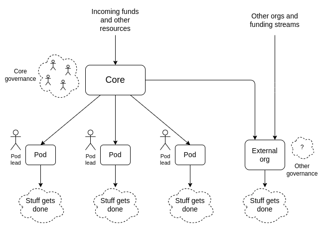
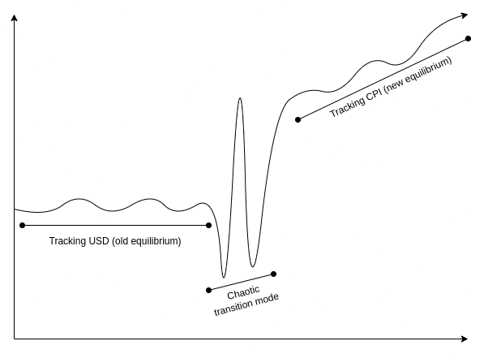
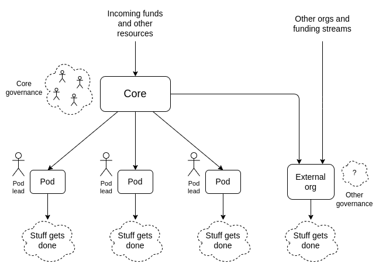
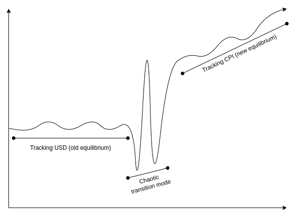

DAOs are not corporations: where decentralization in autonomous organizations matters
2022 Sep 20
See all posts
DAOs are not corporations: where decentralization in autonomous organizations matters
Special thanks to Karl Floersch and Tina Zhen for feedback and review on earlier versions of this article.
Recently, there has been a lot of discourse around the idea that highly decentralized DAOs do not work, and DAO governance should start to more closely resemble that of traditional corporations in order to remain competitive. The argument is always similar: highly decentralized governance is inefficient, and traditional corporate governance structures with boards, CEOs and the like evolved over hundreds of years to optimize for the goal of making good decisions and delivering value to shareholders in a changing world. DAO idealists are naive to assume that egalitarian ideals of decentralization can outperform this, when attempts to do this in the traditional corporate sector have had marginal success at best.
This post will argue why this position is often wrong, and offer a different and more detailed perspective about where different kinds of decentralization are important. In particular, I will focus on three types of situations where decentralization is important:
- Decentralization for making better decisions in concave environments, where pluralism and even naive forms of compromise are on average likely to outperform the kinds of coherency and focus that come from centralization.
- Decentralization for censorship resistance: applications that need to continue functioning while resisting attacks from powerful external actors.
- Decentralization as credible fairness: applications where DAOs are taking on nation-state-like functions like basic infrastructure provision, and so traits like predictability, robustness and neutrality are valued above efficiency.
Centralization is convex, decentralization is concave
See the original post: https://vitalik.ca/general/2020/11/08/concave.html
One way to categorize decisions that need to be made is to look at whether they are convex or concave. In a choice between A and B, we would first look not at the question of A vs B itself, but instead at a higher-order question: would you rather take a compromise between A and B or a coin flip? In expected utility terms, we can express this distinction using a graph:

If a decision is concave, we would prefer a compromise, and if it's convex, we would prefer a coin flip. Often, we can answer the higher-order question of whether a compromise or a coin flip is better much more easily than we can answer the first-order question of A vs B itself.
Examples of convex decisions include:
- Pandemic response: a 100% travel ban may work at keeping a virus out, a 0% travel ban won't stop viruses but at least doesn't inconvenience people, but a 50% or 90% travel ban is the worst of both worlds.
- Military strategy: attacking on front A may make sense, attacking on front B may make sense, but splitting your army in half and attacking at both just means the enemy can easily deal with the two halves one by one
- Technology choices in crypto protocols: using technology A may make sense, using technology B may make sense, but some hybrid between the two often just leads to needless complexity and even adds risks of the two interfering with each other.
Examples of concave decisions include:
- Judicial decisions: an average between two independently chosen judgements is probably more likely to be fair, and less likely to be completely ridiculous, than a random choice of one of the two judgements.
- Public goods funding: usually, giving $X to each of two promising projects is more effective than giving $2X to one and nothing to the other. Having any money at all gives a much bigger boost to a project's ability to achieve its mission than going from $X to $2X does.
- Tax rates: because of quadratic deadweight loss mechanics, a tax rate of X% is often only a quarter as harmful as a tax rate of 2X%, and at the same time more than half as good at raising revenue. Hence, moderate taxes are better than a coin flip between low/no taxes and high taxes.
When decisions are convex, decentralizing the process of making that decision can easily lead to confusion and low-quality compromises. When decisions are concave, on the other hand, relying on the wisdom of the crowds can give better answers. In these cases, DAO-like structures with large amounts of diverse input going into decision-making can make a lot of sense. And indeed, people who see the world as a more concave place in general are more likely to see a need for decentralization in a wider variety of contexts.
Should VitaDAO and Ukraine DAO be DAOs?
Many of the more recent DAOs differ from earlier DAOs, like MakerDAO, in that whereas the earlier DAOs are organized around providing infrastructure, the newer DAOs are organized around performing various tasks around a particular theme. VitaDAO is a DAO funding early-stage longevity research, and UkraineDAO is a DAO organizing and funding efforts related to helping Ukrainian victims of war and supporting the Ukrainian defense effort. Does it make sense for these to be DAOs?
This is a nuanced question, and we can get a view of one possible answer by understanding the internal workings of UkraineDAO itself. Typical DAOs tend to "decentralize" by gathering large amounts of capital into a single pool and using token-holder voting to fund each allocation. UkraineDAO, on the other hand, works by splitting its functions up into many pods, where each pod works as independently as possible. A top layer of governance can create new pods (in principle, governance can also fund pods, though so far funding has only gone to external Ukraine-related organizations), but once a pod is made and endowed with resources, it functions largely on its own. Internally, individual pods do have leaders and function in a more centralized way, though they still try to respect an ethos of personal autonomy.

One natural question that one might ask is: isn't this kind of "DAO" just rebranding the traditional concept of multi-layer hierarchy? I would say this depends on the implementation: it's certainly possible to take this template and turn it into something that feels authoritarian in the same way stereotypical large corporations do, but it's also possible to use the template in a very different way.
Two things that can help ensure that an organization built this way will actually turn out to be meaningfully decentralized include:
- A truly high level of autonomy for pods, where the pods accept resources from the core and are occasionally checked for alignment and competence if they want to keep getting those resources, but otherwise act entirely on their own and don't "take orders" from the core.
- Highly decentralized and diverse core governance. This does not require a "governance token", but it does require broader and more diverse participation in the core. Normally, broad and diverse participation is a large tax on efficiency. But if (1) is satisfied, so pods are highly autonomous and the core needs to make fewer decisions, the effects of top-level governance being less efficient become smaller.
Now, how does this fit into the "convex vs concave" framework? Here, the answer is roughly as follows: the (more decentralized) top level is concave, the (more centralized within each pod) bottom level is convex. Giving a pod $X is generally better than a coin flip between giving it $0 and giving it $2X, and there isn't a large loss from having compromises or "inconsistent" philosophies guiding different decisions. But within each individual pod, having a clear opinionated perspective guiding decisions and being able to insist on many choices that have synergies with each other is much more important.
Decentralization and censorship resistance
The most often publicly cited reason for decentralization in crypto is censorship resistance: a DAO or protocol needs to be able to function and defend itself despite external attack, including from large corporate or even state actors. This has already been publicly talked about at length, and so deserves less elaboration, but there are still some important nuances.
Two of the most successful censorship-resistant services that large numbers of people use today are The Pirate Bay and Sci-Hub. The Pirate Bay is a hybrid system: it's a search engine for BitTorrent, which is a highly decentralized network, but the search engine itself is centralized. It has a small core team that is dedicated to keeping it running, and it defends itself with the mole's strategy in whack-a-mole: when the hammer comes down, move out of the way and re-appear somewhere else. The Pirate Bay and Sci-Hub have both frequently changed domain names, relied on arbitrage between different jurisdictions, and used all kinds of other techniques. This strategy is centralized, but it has allowed them both to be successful both at defense and at product-improvement agility.
DAOs do not act like The Pirate Bay and Sci-Hub; DAOs act like BitTorrent. And there is a reason why BitTorrent does need to be decentralized: it requires not just censorship resistance, but also long-term investment and reliability. If BitTorrent got shut down once a year and required all its seeders and users to switch to a new provider, the network would quickly degrade in quality. Censorship resistance-demanding DAOs should also be in the same category: they should be providing a service that isn't just evading permanent censorship, but also evading mere instability and disruption. MakerDAO (and the Reflexer DAO which manages RAI) are excellent examples of this. A DAO running a decentralized search engine probably does not: you can just build a regular search engine and use Sci-Hub-style techniques to ensure its survival.
Decentralization as credible fairness
Sometimes, DAOs' primary concern is not a need to resist nation states, but rather a need to take on some of the functions of nation states. This often involves tasks that can be described as "maintaining basic infrastructure". Because governments have less ability to oversee DAOs, DAOs need to be structured to take on a greater ability to oversee themselves. And this requires decentralization.

Of course, it's not actually possible to come anywhere close to eliminating hierarchy and inequality of information and decision-making power in its entirety etc etc etc, but what if we can get even 30% of the way there?
Consider three motivating examples: algorithmic stablecoins, the Kleros court, and the Optimism retroactive funding mechanism.
- An algorithmic stablecoin DAO is a system that uses on-chain financial contracts to create a crypto-asset whose price tracks some stable index, often but not necessarily the US dollar.
- Kleros is a "decentralized court": a DAO whose function is to give rulings on arbitration questions such as "is this Github commit an acceptable submission to this on-chain bounty?"
- Optimism's retroactive funding mechanism is a component of the Optimism DAO which retroactively rewards projects that have provided value to the Ethereum and Optimism ecosystems.
In all three cases, there is a need to make subjective judgements, which cannot be done automatically through a piece of on-chain code. In the first case, the goal is simply to get reasonably accurate measurements of some price index. If the stablecoin tracks the US dollar, then you just need the ETH/USD price. If hyperinflation or some other reason to abandon the US dollar arises, the stablecoin DAO might need to manage a trustworthy on-chain CPI calculation. Kleros is all about making unavoidably subjective judgements on any arbitrary question that is submitted to it, including whether or not submitted questions should be rejected for being "unethical". Optimism's retroactive funding is tasked with one of the most open-ended subjective questions at all: what projects have done work that is the most useful to the Ethereum and Optimism ecosystems?
All three cases have an unavoidable need for "governance", and pretty robust governance too. In all cases, governance being attackable, from the outside or the inside, can easily lead to very big problems. Finally, the governance doesn't just need to be robust, it needs to credibly convince a large and untrusting public that it is robust.
The algorithmic stablecoin's Achilles heel: the oracle
Algorithmic stablecoins depend on oracles. In order for an on-chain smart contract to know whether to target the value of DAI to 0.005 ETH or 0.0005 ETH, it needs some mechanism to learn the (external-to-the-chain) piece of information of what the ETH/USD price is. And in fact, this "oracle" is the primary place at which an algorithmic stablecoin can be attacked.
This leads to a security conundrum: an algorithmic stablecoin cannot safely hold more collateral, and therefore cannot issue more units, than the market cap of its speculative token (eg. MKR, FLX...), because if it does, then it becomes profitable to buy up half the speculative token supply, use those tokens to control the oracle, and steal funds from users by feeding bad oracle values and liquidating them.
Here is a possible alternative design for a stablecoin oracle: add a layer of indirection. Quoting the ethresear.ch post:
We set up a contract where there are 13 "providers"; the answer to a query is the median of the answer returned by these providers. Every week, there is a vote, where the oracle token holders can replace one of the providers ...
The security model is simple: if you trust the voting mechanism, you can trust the oracle output, unless 7 providers get corrupted at the same time. If you trust the current set of oracle providers, you can trust the output for at least the next six weeks, even if you completely do not trust the voting mechanism. Hence, if the voting mechanism gets corrupted, there will be able time for participants in any applications that depend on the oracle to make an orderly exit.
Notice the very un-corporate-like nature of this proposal. It involves taking away the governance's ability to act quickly, and intentionally spreading out oracle responsibility across a large number of participants. This is valuable for two reasons. First, it makes it harder for outsiders to attack the oracle, and for new coin holders to quickly take over control of the oracle. Second, it makes it harder for the oracle participants themselves to collude to attack the system. It also mitigates oracle extractable value, where a single provider might intentionally delay publishing to personally profit from a liquidation (in a multi-provider system, if one provider doesn't immediately publish, others soon will).
Fairness in Kleros
The "decentralized court" system Kleros is a really valuable and important piece of infrastructure for the Ethereum ecosystem: Proof of Humanity uses it, various "smart contract bug insurance" products use it, and many other projects plug into it as some kind of "adjudication of last resort".
Recently, there have been some public concerns about whether or not the platform's decision-making is fair. Some participants have made cases, trying to claim a payout from decentralized smart contract insurance platforms that they argue they deserve. Perhaps the most famous of these cases is Mizu's report on case #1170. The case blew up from being a minor language intepretation dispute into a broader scandal because of the accusation that insiders to Kleros itself were making a coordinated effort to throw a large number of tokens to pushing the decision in the direction they wanted. A participant to the debate writes:
The incentives-based decision-making process of the court ... is by all appearances being corrupted by a single dev with a very large (25%) stake in the courts.
Of course, this is but one side of one issue in a broader debate, and it's up to the Kleros community to figure out who is right or wrong and how to respond. But zooming out from the question of this individual case, what is important here is the the extent to which the entire value proposition of something like Kleros depends on it being able to convince the public that it is strongly protected against this kind of centralized manipulation. For something like Kleros to be trusted, it seems necessary that there should not be a single individual with a 25% stake in a high-level court. Whether through a more widely distributed token supply, or through more use of non-token-driven governance, a more credibly decentralized form of governance could help Kleros avoid such concerns entirely.
Optimism retro funding
Optimism's retroactive founding round 1 results were chosen by a quadratic vote among 24 "badge holders". Round 2 will likely use a larger number of badge holders, and the eventual goal is to move to a system where a much larger body of citizens control retro funding allocation, likely through some multilayered mechanism involving sortition, subcommittees and/or delegation.
There have been some internal debates about whether to have more vs fewer citizens: should "citizen" really mean something closer to "senator", an expert contributor who deeply understands the Optimism ecosystem, should it be a position given out to just about anyone who has significantly participated in the Optimism ecosystem, or somewhere in between? My personal stance on this issue has always been in the direction of more citizens, solving governance inefficiency issues with second-layer delegation instead of adding enshrined centralization into the governance protocol. One key reason for my position is the potential for insider trading and self-dealing issues.
The Optimism retroactive funding mechanism has always been intended to be coupled with a prospective speculation ecosystem: public-goods projects that need funding now could sell "project tokens", and anyone who buys project tokens becomes eligible for a large retroactively-funded compensation later. But this mechanism working well depends crucially on the retroactive funding part working correctly, and is very vulnerable to the retroactive funding mechanism becoming corrupted. Some example attacks:
- If some group of people has decided how they will vote on some project, they can buy up (or if overpriced, short) its project token ahead of releasing the decision.
- If some group of people knows that they will later adjudicate on some specific project, they can buy up the project token early and then intentionally vote in its favor even if the project does not actually deserve funding.
- Funding deciders can accept bribes from projects.
There are typically three ways of dealing with these types of corruption and insider trading issues:
- Retroactively punish malicious deciders.
- Proactively filter for higher-quality deciders.
- Add more deciders.
The corporate world typically focuses on the first two, using financial surveillance and judicious penalties for the first and in-person interviews and background checks for the second. The decentralized world has less access to such tools: project tokens are likely to be tradeable anonymously, DAOs have at best limited recourse to external judicial systems, and the remote and online nature of the projects and the desire for global inclusivity makes it harder to do background checks and informal in-person "smell tests" for character. Hence, the decentralized world needs to put more weight on the third technique: distribute decision-making power among more deciders, so that each individual decider has less power, and so collusions are more likely to be whistleblown on and revealed.
Should DAOs learn more from corporate governance or political science?
Curtis Yarvin, an American philosopher whose primary "big idea" is that corporations are much more effective and optimized than governments and so we should improve governments by making them look more like corporations (eg. by moving away from democracy and closer to monarchy), recently wrote an article expressing his thoughts on how DAO governance should be designed. Not surprisingly, his answer involves borrowing ideas from governance of traditional corporations. From his introduction:
Instead the basic design of the Anglo-American limited-liability joint-stock company has remained roughly unchanged since the start of the Industrial Revolution—which, a contrarian historian might argue, might actually have been a Corporate Revolution. If the joint-stock design is not perfectly optimal, we can expect it to be nearly optimal.
While there is a categorical difference between these two types of organizations—we could call them first-order (sovereign) and second-order (contractual) organizations—it seems that society in the current year has very effective second-order organizations, but not very effective first-order organizations.
Therefore, we probably know more about second-order organizations. So, when designing a DAO, we should start from corporate governance, not political science.
Yarvin's post is very correct in identifying the key difference between "first-order" (sovereign) and "second-order" (contractual) organizations - in fact, that exact distinction is precisely the topic of the section in my own post above on credible fairness. However, Yarvin's post makes a big, and surprising, mistake immediately after, by immediately pivoting to saying that corporate governance is the better starting point for how DAOs should operate. The mistake is surprising because the logic of the situation seems to almost directly imply the exact opposite conclusion. Because DAOs do not have a sovereign above them, and are often explicitly in the business of providing services (like currency and arbitration) that are typically reserved for sovereigns, it is precisely the design of sovereigns (political science), and not the design of corporate governance, that DAOs have more to learn from.
To Yarvin's credit, the second part of his post does advocate an "hourglass" model that combines a decentralized alignment and accountability layer and a centralized management and execution layer, but this is already an admission that DAO design needs to learn at least as much from first-order orgs as from second-order orgs.
Sovereigns are inefficient and corporations are efficient for the same reason why number theory can prove very many things but abstract group theory can prove much fewer things: corporations fail less and accomplish more because they can make more assumptions and have more powerful tools to work with. Corporations can count on their local sovereign to stand up to defend them if the need arises, as well as to provide an external legal system they can lean on to stabilize their incentive structure. In a sovereign, on the other hand, the biggest challenge is often what to do when the incentive structure is under attack and/or at risk of collapsing entirely, with no external leviathan standing ready to support it.
Perhaps the greatest problem in the design of successful governance systems for sovereigns is what Samo Burja calls "the succession problem": how to ensure continuity as the system transitions from being run by one group of humans to another group as the first group retires. Corporations, Burja writes, often just don't solve the problem at all:
Silicon Valley enthuses over "disruption" because we have become so used to the succession problem remaining unsolved within discrete institutions such as companies.
DAOs will need to solve the succession problem eventually (in fact, given the sheer frequency of the "get rich and retire" pattern among crypto early adopters, some DAOs have to deal with succession issues already). Monarchies and corporate-like forms often have a hard time solving the succession problem, because the institutional structure gets deeply tied up with the habits of one specific person, and it either proves difficult to hand off, or there is a very-high-stakes struggle over whom to hand it off to. More decentralized political forms like democracy have at least a theory of how smooth transitions can happen. Hence, I would argue that for this reason too, DAOs have more to learn from the more liberal and democratic schools of political science than they do from the governance of corporations.
Of course, DAOs will in some cases have to accomplish specific complicated tasks, and some use of corporate-like forms for accomplishing those tasks may well be a good idea. Additionally, DAOs need to handle unexpected uncertainty. A system that was intended to function in a stable and unchanging way around one set of assumptions, when faced with an extreme and unexpected change to those circumstances, does need some kind of brave leader to coordinate a response. A prototypical example of the latter is stablecoins handling a US dollar collapse: what happens when a stablecoin DAO that evolved around the assumption that it's just trying to track the US dollar suddenly faces a world where the US dollar is no longer a viable thing to be tracking, and a rapid switch to some kind of CPI is needed?

Stylized diagram of the internal experience of the RAI ecosystem going through an unexpected transition to a CPI-based regime if the USD ceases to be a viable reference asset.
Here, corporate governance-inspired approaches may seem better, because they offer a ready-made pattern for responding to such a problem: the founder organizes a pivot. But as it turns out, the history of political systems also offers a pattern well-suited to this situation, and one that covers the question of how to go back to a decentralized mode when the crisis is over: the Roman Republic custom of electing a dictator for a temporary term to respond to a crisis.
Realistically, we probably only need a small number of DAOs that look more like constructs from political science than something out of corporate governance. But those are the really important ones. A stablecoin does not need to be efficient; it must first and foremost be stable and decentralized. A decentralized court is similar. A system that directs funding for a particular cause - whether Optimism retroactive funding, VitaDAO, UkraineDAO or something else - is optimizing for a much more complicated purpose than profit maximization, and so an alignment solution other than shareholder profit is needed to make sure it keeps using the funds for the purpose that was intended.
By far the greatest number of organizations, even in a crypto world, are going to be "contractual" second-order organizations that ultimately lean on these first-order giants for support, and for these organizations, much simpler and leader-driven forms of governance emphasizing agility are often going to make sense. But this should not distract from the fact that the ecosystem would not survive without some non-corporate decentralized forms keeping the whole thing stable.
DAOs are not corporations: where decentralization in autonomous organizations matters
2022 Sep 20 See all postsSpecial thanks to Karl Floersch and Tina Zhen for feedback and review on earlier versions of this article.
Recently, there has been a lot of discourse around the idea that highly decentralized DAOs do not work, and DAO governance should start to more closely resemble that of traditional corporations in order to remain competitive. The argument is always similar: highly decentralized governance is inefficient, and traditional corporate governance structures with boards, CEOs and the like evolved over hundreds of years to optimize for the goal of making good decisions and delivering value to shareholders in a changing world. DAO idealists are naive to assume that egalitarian ideals of decentralization can outperform this, when attempts to do this in the traditional corporate sector have had marginal success at best.
This post will argue why this position is often wrong, and offer a different and more detailed perspective about where different kinds of decentralization are important. In particular, I will focus on three types of situations where decentralization is important:
Centralization is convex, decentralization is concave
See the original post: https://vitalik.ca/general/2020/11/08/concave.html
One way to categorize decisions that need to be made is to look at whether they are convex or concave. In a choice between A and B, we would first look not at the question of A vs B itself, but instead at a higher-order question: would you rather take a compromise between A and B or a coin flip? In expected utility terms, we can express this distinction using a graph:
If a decision is concave, we would prefer a compromise, and if it's convex, we would prefer a coin flip. Often, we can answer the higher-order question of whether a compromise or a coin flip is better much more easily than we can answer the first-order question of A vs B itself.
Examples of convex decisions include:
Examples of concave decisions include:
When decisions are convex, decentralizing the process of making that decision can easily lead to confusion and low-quality compromises. When decisions are concave, on the other hand, relying on the wisdom of the crowds can give better answers. In these cases, DAO-like structures with large amounts of diverse input going into decision-making can make a lot of sense. And indeed, people who see the world as a more concave place in general are more likely to see a need for decentralization in a wider variety of contexts.
Should VitaDAO and Ukraine DAO be DAOs?
Many of the more recent DAOs differ from earlier DAOs, like MakerDAO, in that whereas the earlier DAOs are organized around providing infrastructure, the newer DAOs are organized around performing various tasks around a particular theme. VitaDAO is a DAO funding early-stage longevity research, and UkraineDAO is a DAO organizing and funding efforts related to helping Ukrainian victims of war and supporting the Ukrainian defense effort. Does it make sense for these to be DAOs?
This is a nuanced question, and we can get a view of one possible answer by understanding the internal workings of UkraineDAO itself. Typical DAOs tend to "decentralize" by gathering large amounts of capital into a single pool and using token-holder voting to fund each allocation. UkraineDAO, on the other hand, works by splitting its functions up into many pods, where each pod works as independently as possible. A top layer of governance can create new pods (in principle, governance can also fund pods, though so far funding has only gone to external Ukraine-related organizations), but once a pod is made and endowed with resources, it functions largely on its own. Internally, individual pods do have leaders and function in a more centralized way, though they still try to respect an ethos of personal autonomy.

One natural question that one might ask is: isn't this kind of "DAO" just rebranding the traditional concept of multi-layer hierarchy? I would say this depends on the implementation: it's certainly possible to take this template and turn it into something that feels authoritarian in the same way stereotypical large corporations do, but it's also possible to use the template in a very different way.
Two things that can help ensure that an organization built this way will actually turn out to be meaningfully decentralized include:
Now, how does this fit into the "convex vs concave" framework? Here, the answer is roughly as follows: the (more decentralized) top level is concave, the (more centralized within each pod) bottom level is convex. Giving a pod $X is generally better than a coin flip between giving it $0 and giving it $2X, and there isn't a large loss from having compromises or "inconsistent" philosophies guiding different decisions. But within each individual pod, having a clear opinionated perspective guiding decisions and being able to insist on many choices that have synergies with each other is much more important.
Decentralization and censorship resistance
The most often publicly cited reason for decentralization in crypto is censorship resistance: a DAO or protocol needs to be able to function and defend itself despite external attack, including from large corporate or even state actors. This has already been publicly talked about at length, and so deserves less elaboration, but there are still some important nuances.
Two of the most successful censorship-resistant services that large numbers of people use today are The Pirate Bay and Sci-Hub. The Pirate Bay is a hybrid system: it's a search engine for BitTorrent, which is a highly decentralized network, but the search engine itself is centralized. It has a small core team that is dedicated to keeping it running, and it defends itself with the mole's strategy in whack-a-mole: when the hammer comes down, move out of the way and re-appear somewhere else. The Pirate Bay and Sci-Hub have both frequently changed domain names, relied on arbitrage between different jurisdictions, and used all kinds of other techniques. This strategy is centralized, but it has allowed them both to be successful both at defense and at product-improvement agility.
DAOs do not act like The Pirate Bay and Sci-Hub; DAOs act like BitTorrent. And there is a reason why BitTorrent does need to be decentralized: it requires not just censorship resistance, but also long-term investment and reliability. If BitTorrent got shut down once a year and required all its seeders and users to switch to a new provider, the network would quickly degrade in quality. Censorship resistance-demanding DAOs should also be in the same category: they should be providing a service that isn't just evading permanent censorship, but also evading mere instability and disruption. MakerDAO (and the Reflexer DAO which manages RAI) are excellent examples of this. A DAO running a decentralized search engine probably does not: you can just build a regular search engine and use Sci-Hub-style techniques to ensure its survival.
Decentralization as credible fairness
Sometimes, DAOs' primary concern is not a need to resist nation states, but rather a need to take on some of the functions of nation states. This often involves tasks that can be described as "maintaining basic infrastructure". Because governments have less ability to oversee DAOs, DAOs need to be structured to take on a greater ability to oversee themselves. And this requires decentralization.
Of course, it's not actually possible to come anywhere close to eliminating hierarchy and inequality of information and decision-making power in its entirety etc etc etc, but what if we can get even 30% of the way there?
Consider three motivating examples: algorithmic stablecoins, the Kleros court, and the Optimism retroactive funding mechanism.
In all three cases, there is a need to make subjective judgements, which cannot be done automatically through a piece of on-chain code. In the first case, the goal is simply to get reasonably accurate measurements of some price index. If the stablecoin tracks the US dollar, then you just need the ETH/USD price. If hyperinflation or some other reason to abandon the US dollar arises, the stablecoin DAO might need to manage a trustworthy on-chain CPI calculation. Kleros is all about making unavoidably subjective judgements on any arbitrary question that is submitted to it, including whether or not submitted questions should be rejected for being "unethical". Optimism's retroactive funding is tasked with one of the most open-ended subjective questions at all: what projects have done work that is the most useful to the Ethereum and Optimism ecosystems?
All three cases have an unavoidable need for "governance", and pretty robust governance too. In all cases, governance being attackable, from the outside or the inside, can easily lead to very big problems. Finally, the governance doesn't just need to be robust, it needs to credibly convince a large and untrusting public that it is robust.
The algorithmic stablecoin's Achilles heel: the oracle
Algorithmic stablecoins depend on oracles. In order for an on-chain smart contract to know whether to target the value of DAI to 0.005 ETH or 0.0005 ETH, it needs some mechanism to learn the (external-to-the-chain) piece of information of what the ETH/USD price is. And in fact, this "oracle" is the primary place at which an algorithmic stablecoin can be attacked.
This leads to a security conundrum: an algorithmic stablecoin cannot safely hold more collateral, and therefore cannot issue more units, than the market cap of its speculative token (eg. MKR, FLX...), because if it does, then it becomes profitable to buy up half the speculative token supply, use those tokens to control the oracle, and steal funds from users by feeding bad oracle values and liquidating them.
Here is a possible alternative design for a stablecoin oracle: add a layer of indirection. Quoting the ethresear.ch post:
Notice the very un-corporate-like nature of this proposal. It involves taking away the governance's ability to act quickly, and intentionally spreading out oracle responsibility across a large number of participants. This is valuable for two reasons. First, it makes it harder for outsiders to attack the oracle, and for new coin holders to quickly take over control of the oracle. Second, it makes it harder for the oracle participants themselves to collude to attack the system. It also mitigates oracle extractable value, where a single provider might intentionally delay publishing to personally profit from a liquidation (in a multi-provider system, if one provider doesn't immediately publish, others soon will).
Fairness in Kleros
The "decentralized court" system Kleros is a really valuable and important piece of infrastructure for the Ethereum ecosystem: Proof of Humanity uses it, various "smart contract bug insurance" products use it, and many other projects plug into it as some kind of "adjudication of last resort".
Recently, there have been some public concerns about whether or not the platform's decision-making is fair. Some participants have made cases, trying to claim a payout from decentralized smart contract insurance platforms that they argue they deserve. Perhaps the most famous of these cases is Mizu's report on case #1170. The case blew up from being a minor language intepretation dispute into a broader scandal because of the accusation that insiders to Kleros itself were making a coordinated effort to throw a large number of tokens to pushing the decision in the direction they wanted. A participant to the debate writes:
Of course, this is but one side of one issue in a broader debate, and it's up to the Kleros community to figure out who is right or wrong and how to respond. But zooming out from the question of this individual case, what is important here is the the extent to which the entire value proposition of something like Kleros depends on it being able to convince the public that it is strongly protected against this kind of centralized manipulation. For something like Kleros to be trusted, it seems necessary that there should not be a single individual with a 25% stake in a high-level court. Whether through a more widely distributed token supply, or through more use of non-token-driven governance, a more credibly decentralized form of governance could help Kleros avoid such concerns entirely.
Optimism retro funding
Optimism's retroactive founding round 1 results were chosen by a quadratic vote among 24 "badge holders". Round 2 will likely use a larger number of badge holders, and the eventual goal is to move to a system where a much larger body of citizens control retro funding allocation, likely through some multilayered mechanism involving sortition, subcommittees and/or delegation.
There have been some internal debates about whether to have more vs fewer citizens: should "citizen" really mean something closer to "senator", an expert contributor who deeply understands the Optimism ecosystem, should it be a position given out to just about anyone who has significantly participated in the Optimism ecosystem, or somewhere in between? My personal stance on this issue has always been in the direction of more citizens, solving governance inefficiency issues with second-layer delegation instead of adding enshrined centralization into the governance protocol. One key reason for my position is the potential for insider trading and self-dealing issues.
The Optimism retroactive funding mechanism has always been intended to be coupled with a prospective speculation ecosystem: public-goods projects that need funding now could sell "project tokens", and anyone who buys project tokens becomes eligible for a large retroactively-funded compensation later. But this mechanism working well depends crucially on the retroactive funding part working correctly, and is very vulnerable to the retroactive funding mechanism becoming corrupted. Some example attacks:
There are typically three ways of dealing with these types of corruption and insider trading issues:
The corporate world typically focuses on the first two, using financial surveillance and judicious penalties for the first and in-person interviews and background checks for the second. The decentralized world has less access to such tools: project tokens are likely to be tradeable anonymously, DAOs have at best limited recourse to external judicial systems, and the remote and online nature of the projects and the desire for global inclusivity makes it harder to do background checks and informal in-person "smell tests" for character. Hence, the decentralized world needs to put more weight on the third technique: distribute decision-making power among more deciders, so that each individual decider has less power, and so collusions are more likely to be whistleblown on and revealed.
Should DAOs learn more from corporate governance or political science?
Curtis Yarvin, an American philosopher whose primary "big idea" is that corporations are much more effective and optimized than governments and so we should improve governments by making them look more like corporations (eg. by moving away from democracy and closer to monarchy), recently wrote an article expressing his thoughts on how DAO governance should be designed. Not surprisingly, his answer involves borrowing ideas from governance of traditional corporations. From his introduction:
Yarvin's post is very correct in identifying the key difference between "first-order" (sovereign) and "second-order" (contractual) organizations - in fact, that exact distinction is precisely the topic of the section in my own post above on credible fairness. However, Yarvin's post makes a big, and surprising, mistake immediately after, by immediately pivoting to saying that corporate governance is the better starting point for how DAOs should operate. The mistake is surprising because the logic of the situation seems to almost directly imply the exact opposite conclusion. Because DAOs do not have a sovereign above them, and are often explicitly in the business of providing services (like currency and arbitration) that are typically reserved for sovereigns, it is precisely the design of sovereigns (political science), and not the design of corporate governance, that DAOs have more to learn from.
To Yarvin's credit, the second part of his post does advocate an "hourglass" model that combines a decentralized alignment and accountability layer and a centralized management and execution layer, but this is already an admission that DAO design needs to learn at least as much from first-order orgs as from second-order orgs.
Sovereigns are inefficient and corporations are efficient for the same reason why number theory can prove very many things but abstract group theory can prove much fewer things: corporations fail less and accomplish more because they can make more assumptions and have more powerful tools to work with. Corporations can count on their local sovereign to stand up to defend them if the need arises, as well as to provide an external legal system they can lean on to stabilize their incentive structure. In a sovereign, on the other hand, the biggest challenge is often what to do when the incentive structure is under attack and/or at risk of collapsing entirely, with no external leviathan standing ready to support it.
Perhaps the greatest problem in the design of successful governance systems for sovereigns is what Samo Burja calls "the succession problem": how to ensure continuity as the system transitions from being run by one group of humans to another group as the first group retires. Corporations, Burja writes, often just don't solve the problem at all:
DAOs will need to solve the succession problem eventually (in fact, given the sheer frequency of the "get rich and retire" pattern among crypto early adopters, some DAOs have to deal with succession issues already). Monarchies and corporate-like forms often have a hard time solving the succession problem, because the institutional structure gets deeply tied up with the habits of one specific person, and it either proves difficult to hand off, or there is a very-high-stakes struggle over whom to hand it off to. More decentralized political forms like democracy have at least a theory of how smooth transitions can happen. Hence, I would argue that for this reason too, DAOs have more to learn from the more liberal and democratic schools of political science than they do from the governance of corporations.
Of course, DAOs will in some cases have to accomplish specific complicated tasks, and some use of corporate-like forms for accomplishing those tasks may well be a good idea. Additionally, DAOs need to handle unexpected uncertainty. A system that was intended to function in a stable and unchanging way around one set of assumptions, when faced with an extreme and unexpected change to those circumstances, does need some kind of brave leader to coordinate a response. A prototypical example of the latter is stablecoins handling a US dollar collapse: what happens when a stablecoin DAO that evolved around the assumption that it's just trying to track the US dollar suddenly faces a world where the US dollar is no longer a viable thing to be tracking, and a rapid switch to some kind of CPI is needed?

Stylized diagram of the internal experience of the RAI ecosystem going through an unexpected transition to a CPI-based regime if the USD ceases to be a viable reference asset.
Here, corporate governance-inspired approaches may seem better, because they offer a ready-made pattern for responding to such a problem: the founder organizes a pivot. But as it turns out, the history of political systems also offers a pattern well-suited to this situation, and one that covers the question of how to go back to a decentralized mode when the crisis is over: the Roman Republic custom of electing a dictator for a temporary term to respond to a crisis.
Realistically, we probably only need a small number of DAOs that look more like constructs from political science than something out of corporate governance. But those are the really important ones. A stablecoin does not need to be efficient; it must first and foremost be stable and decentralized. A decentralized court is similar. A system that directs funding for a particular cause - whether Optimism retroactive funding, VitaDAO, UkraineDAO or something else - is optimizing for a much more complicated purpose than profit maximization, and so an alignment solution other than shareholder profit is needed to make sure it keeps using the funds for the purpose that was intended.
By far the greatest number of organizations, even in a crypto world, are going to be "contractual" second-order organizations that ultimately lean on these first-order giants for support, and for these organizations, much simpler and leader-driven forms of governance emphasizing agility are often going to make sense. But this should not distract from the fact that the ecosystem would not survive without some non-corporate decentralized forms keeping the whole thing stable.